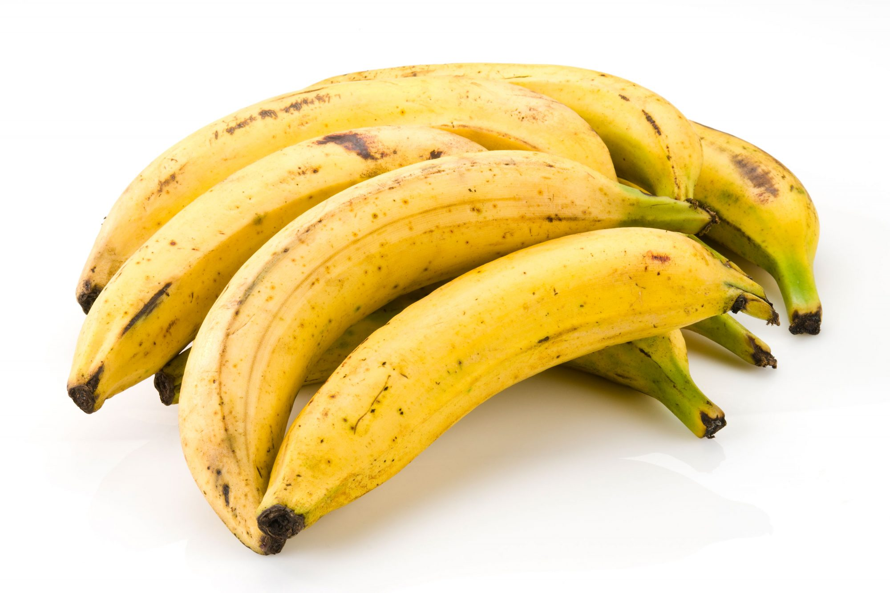

The health benefits of eating cocoyam includes improving the chances of dietary success, supporting digestive health,
a good source of carbohydrate, improving metabolic efficiency and nutrient absorption, strengthening immune function
and supporting blood health. Cocoyam, which is the thick, tuber stalk of the Cocoyam plant is an extremely important
part of global cuisines and diets, as it has been for thousands of years. The health benefits of eating cocoyam includes
providing strength for good aerobic exercise, improving heart and bone health, improving enzyme function and fighting anemia.
plantain

A plantain to the untrained eye could easily be mistaken for a banana. In fact, it belongs to Musaceae,
the banana family of plants, and it's closely related to the common banana. Believed to be native to Southeast Asia,
plantains are grown in tropical regions around the world and in a variety of cuisines. Unripe plantains are green
to yellow, difficult to peel, and the fruit is hard with a starchy flavor—this is the perfect stage for boiling and frying them.
When fully ripe, plantains are black, with a flavor that some people describe as similar to a banana but not as sweet.
Most people prefer them cooked even at this stage.
yam
Yam is the common name for some plant species in the genus Dioscorea (family Dioscoreaceae) that form edible tubers
(some other species in the genus being toxic).
Yams are perennial herbaceous vines native to Africa, Asia, and the Americas and cultivated for the consumption
of their starchy tubers in many temperate and tropical regions. The tubers themselves, also called "yams", come
in a variety of forms owing to numerous cultivars and related species.